This 000-28 is a woody, resonant guitar with great clarity between the strings and strong output. It has wear from years of play, including a re-glued pickguard that had peeled up around the edges, but no b string crack. The neck has been reset and there is great action and plenty of room for adjustment for years to come. Sounds great finger picking or strumming. Original, purple-lined case.
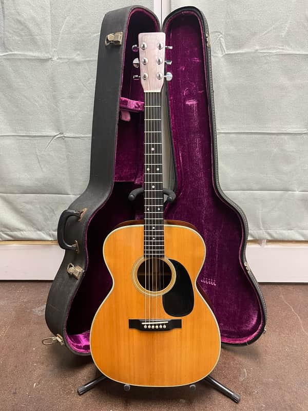
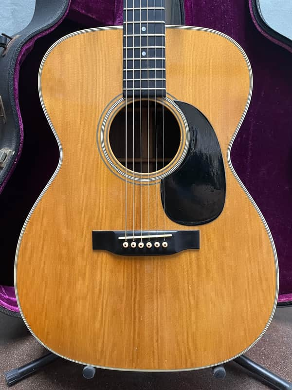
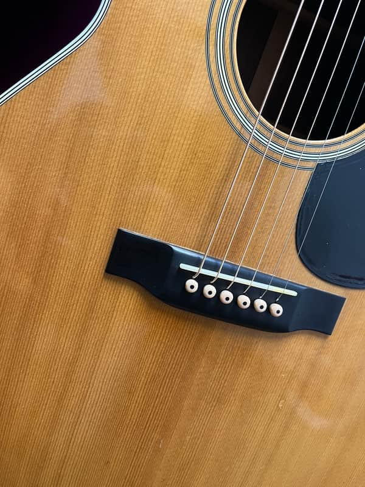
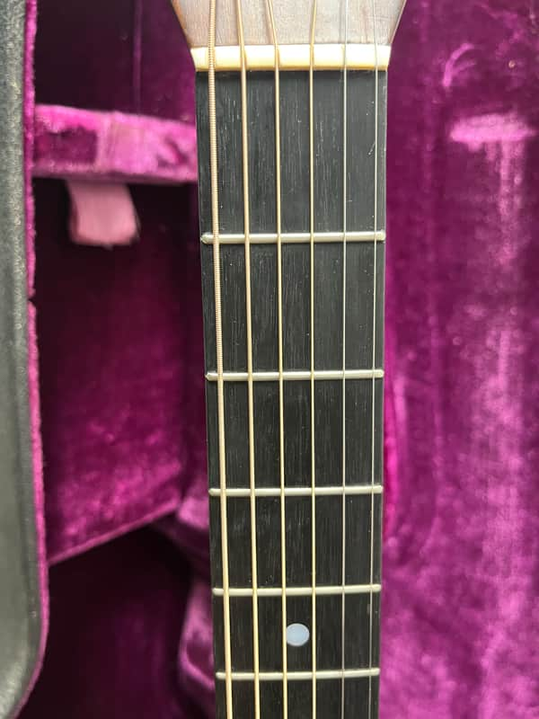
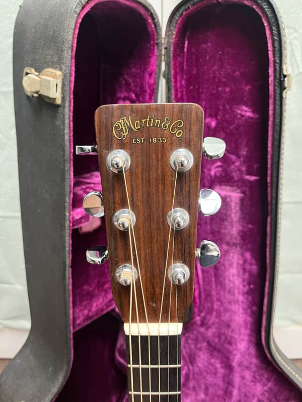
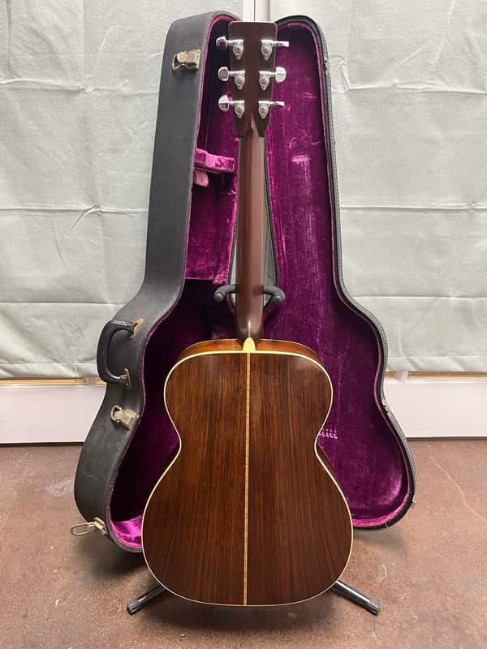
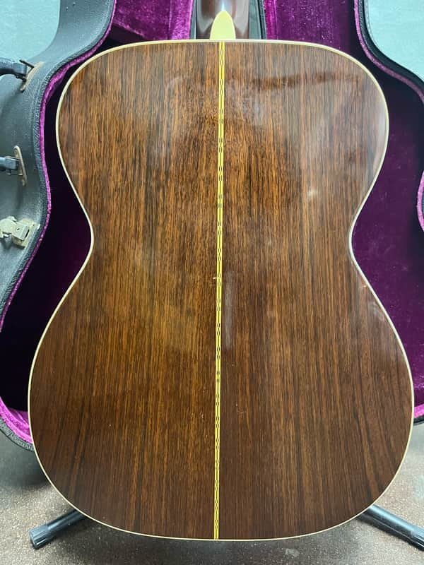
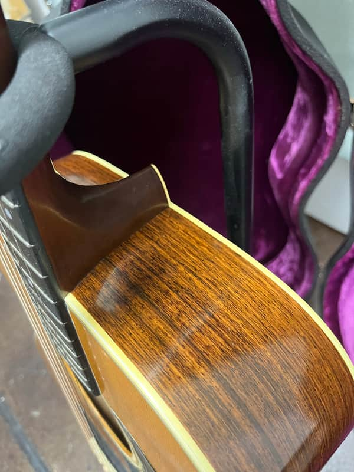
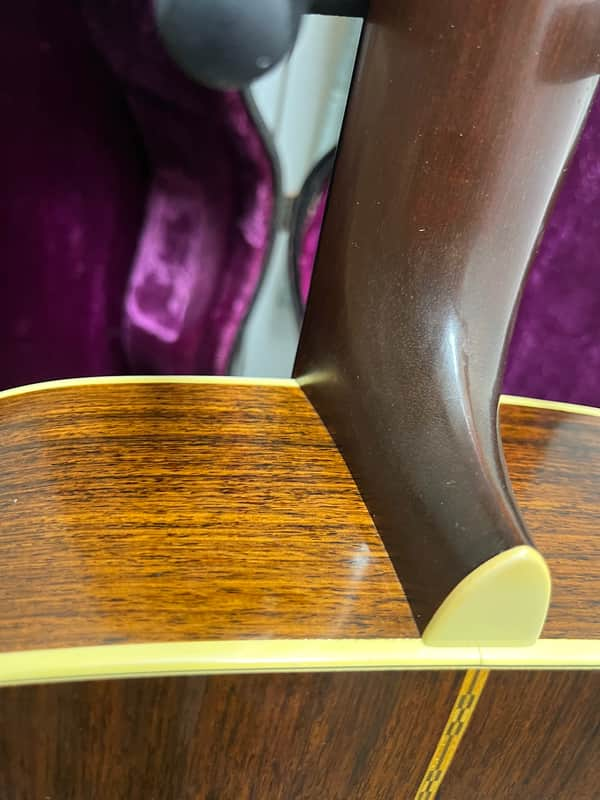
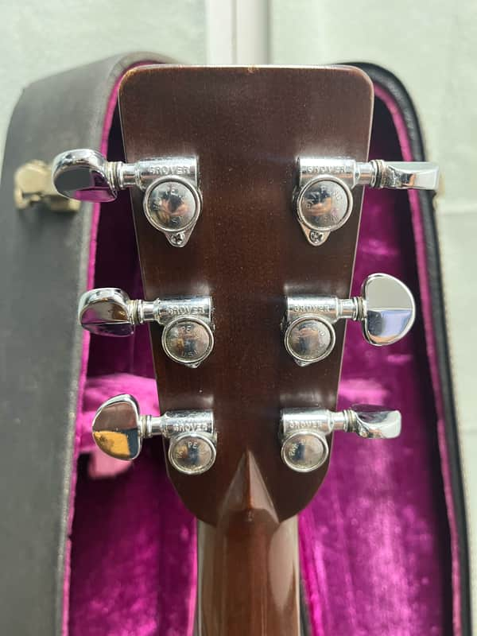
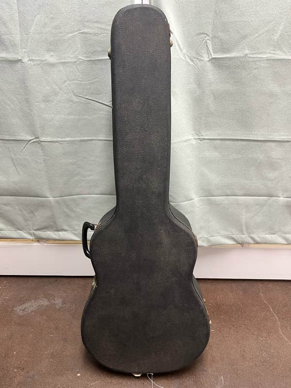
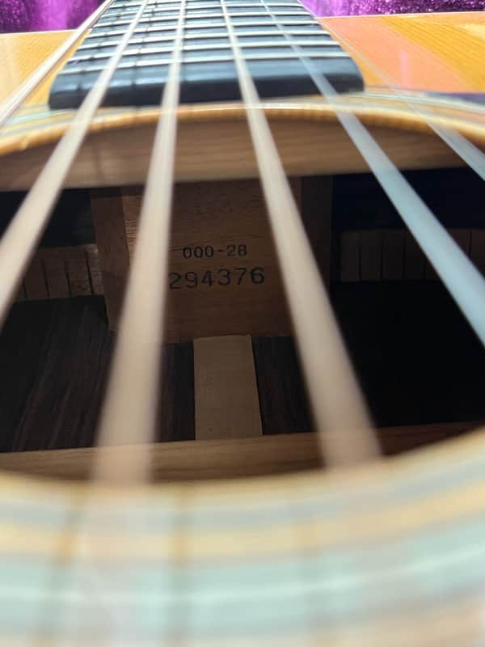